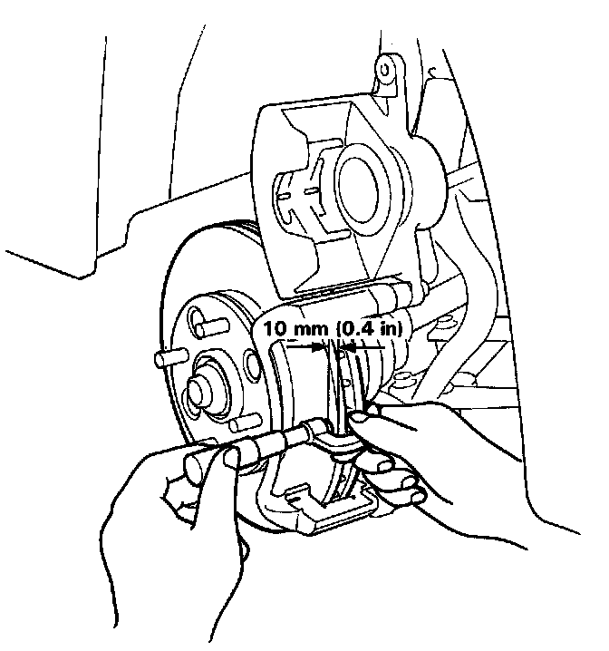

Disc Thickness and Parallelism
Front Brake Disc Thickness and Parallelism Inspection1. Loosen the front wheel lug nuts slightly, then raise the car and support on safety stands. Remove the front wheels.
2. Remove the brake pads. Service and Repair

3. Using a micrometer, measure disc thickness at eight points, approximately 45° apart and 10 mm (0.4 in) in from the outer edge of the disc.
Brake disc thickness:
Standard: 23.0 mm (0.91 in)
Brake Disc Parallelism: 0.015 mm (0.0006 in) max.
NOTE: This is the maximum allowable difference between any thickness measurements.
4. If the disc is beyond the service limits for parallelism, refinish the rotor with an on-car brake lathe. The Kwik-Lathe produced by Kwik-Way Manufacturing Co. and the "Front Brake Disc Lathe" offered by Snap-on Tools Co. are approved for this operation.
Max. Refinishing Limit: 21.0 mm (0.83 in)